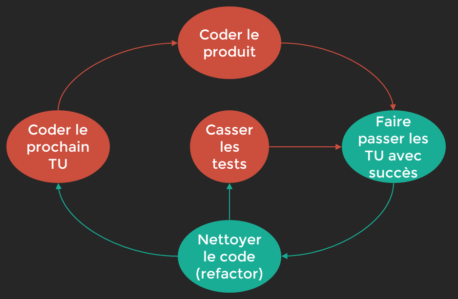

Les Tests¶
Pyramides des tests¶

Les Tests d’Intégration¶
Les test d’intégration vérifient que les unités de codes fonctionnent ensemble: test unitaires doivent passés.
- execution de composants extérieures ( bdd,service web…)
Les Tests fonctionnels(End to End)¶
Simulent le comportement d’un utilisateur final sur l’application, depuis l’interface utilisateur.
Boite Noire qui ne connait pas les briques et unités de codes de l’application.
Pourquoi Tester ?¶
Tester pour faire face à l’inattendu :
Utiliser les user stories et prévoir les scénarios alternatifs :
cas des limites courants et risque de non disponibilité de services extérieurs
Testez pour faciliter la maintenance:
Eviter la régréssion d’un code en testant pour faciliter la maintenance et la correction de ce dernier
Testez pour communiquer:
Permet de savoir comment l’application focntionne: plus simple pour communiquer
JUnit & Test Unitaires¶
Les test unitaires sont crées pour tester des fonctionnalités, excécutés de nombreuses fois et stables.
« FIRST »¶
Ils doivent respecter le FIRST :
- F: fast doit être rapide , exclure lecture fichiers, internet…
- I: isolation , doit être indépendant du système ou d’autre résultat
- R: repeatable, doit etre repetable et autonome et donner toujours le meme résultat
- S: self-validation, doit faire un succes ou echoué , pas d’autre états
- T: Thorought, = Appronfondi » il faut tester tous les cas nominaux et scenarion alternatifs, cas limites, sécurité, comportement innatendu…
Nom des methodes test¶
Utilisation du camelCase:
- MethodName_StateUnderTest_ExpectedBehavior
Exemple : add_twoPositiveIntegers_returnsTheirSum()
- MethodName_ExpectedBehavior_StateUnderTest
Exemple : add_returnsTheSum_ofTwoPositiveIntegers()
- givenStateUnderTest_whenMethodAction_thenExpectedBehavior
Exemple : givenTwoPostiveIntegers_whenAdded_thenTheyShouldBeSummed()
#2 methode du Red Red Green:¶
la refactorisation c’est rendre le code plus lisible et/ou plus élégant sans changer son comportement pour conserver le vert ie le test validé…

un exemple avec un test sur une addition:
package calculator; import static org.junit.jupiter.api.Assertions.assertEquals; import org.junit.jupiter.api.Test; class CalculatorTest { @Test void testAddTwoPositiveNumbers() { // ARRANGE int a = 2; int b = 3; Calculator calculator = new Calculator(); // ACT int somme = calculator.add(a, b); // ASSERT assertEquals(5, somme); }
JUnit & ses Annotations¶
Annotations Standards¶
@BeforeEach¶
Exécutez une méthode avant chaque test. C’est un très bon emplacement pour installer ou organiser un prérequis pour vos tests.
@AfterEach¶
Exécutez une méthode après chaque test. C’est un très bon emplacement pour nettoyer ou satisfaire à une postcondition.
@BeforeAll¶
Désignez une méthode statique pour qu’elle soit exécutée avant tous vos tests. Vous pouvez l’utiliser pour installer d’autres variables statiques pour vos tests.
@AfterAll¶
Désignez une méthode statique pour qu’elle soit exécutée après tous vos tests. Vous pouvez utiliser ceci pour nettoyer les dépendances statiques.
@ParametrizedTest¶
Vous souhaitez réutiliser le même test avec plusieurs entrants (@ValueSource) voire plusieurs entrants/sortants (@CsvSource).
@Timeout¶
Si vous testez une méthode qui ne doit pas être trop lente, vous pouvez la forcer à échouer le test.
Annotations Avancées¶
@tag¶
On peut catégoriser un test grace a cette annotation . un test peut avoir plusieurs tag exemple:
@tag("le nom de la catégorie des tests")
@DisplayName¶
Permet de nommer les tests de facon plus lisible que le nom de la methode test exemple :
@DisplayName ("Soit une entrée de valeur positive, lorsqu'on applique la méthode , alors on doit avoir comme résultat ... ")
@Nested¶
Permet de grouper vos tests dans une classe interne. Si un seul test echoué , le groupe échoue example:
@Nested @Tag("TemperatureTests") @DisplayName("Réussir à convertir des températures") class TemperatureTests { @Test @DisplayName("Soit une T° à 0°C, lorsque l'on convertit en °F, alors on obtient 32°F.") public void celsiusToFahrenheit_returnsAFahrenheitTempurature_whenCelsiusIsZero() { Double actualFahrenheit = calculatorUnderTest.celsiusToFahrenheit(0.0); assertThat(actualFahrenheit).isCloseTo(32.0, withinPercentage(0.01)); } @Test @DisplayName("Soit une T° à 32°F, lorsque l'on convertit en °C, alors on obtient 0°C.") public void fahrenheitToCelsius_returnsZeroCelciusTempurature_whenThirtyTwo() { Double actualCelsius = calculatorUnderTest.fahrenheitToCelsius(32.0); assertThat(actualCelsius).isCloseTo(0.0, withinPercentage(0.01)); } }
@ExtendWith¶
Permet de modifier le déroulement des tests menés par Junit5 entre autre uitlisation d’un logger class de log pour afficher les messages dans un log ou une sortie standard out au lieu d’utiliser des println
@Disable¶
placé juste au dessus @test , permet de taire un test pour le moment et de pouvoir y revenir aprés. Mettre un commentaire pour expliquer ex:
@Disable("Stoppé car cela arrive tous les mardis")
AssertJ¶
c’est une librairie permettant d’utiliser des Assertions plus parlantes pour l’utilisateur.
Elle est intéressante car elle comporte différents modules à utiliser pour des cas particuliers: exemple assertJ DB Module
ci joint le lien vers la doc<https://assertj.github.io/doc/>_
La couverture du code¶
La couverture des test = quantité de code couverte par les test / quantité de codes total
Pour connaitre la couverture du code par les tests, il faut d’abord savoir sur quel critére on se base pour compter la quantité de code :
- le nombre de lignes
- le nombres d’instructions
- le nombre de branches (ensemble d’instruction IF/else Try/catch
- le nombre de methodes/fonctionnels
EclEmma(Eclipse)¶
il suffit d’utiliser le « coverage as » JUnit Test sur la classe Test.

{kind=link}
{kind=link}
résultat s’affiche avec le pourcentage total aussi bien avec src/main que src/test qui nous intéresse pas puisque c’est le code du test

JACOCO¶
Java Codes Coverage
Donne un rapport sur page html avec uniquement le pourcentage de couverture de code sur le src/main
Config¶
- rajouter le plugin jacoco-maven-plugin
<plugin> <groupId>org.jacoco</groupId> <artifactId>jacoco-maven-plugin</artifactId> <version>0.8.5</version> <executions> <execution> <goals> <goal>prepare-agent</goal> </goals> </execution> <execution> <id>report</id> <phase>test</phase> <goals> <goal>report</goal> </goals> </execution> </executions> </plugin>
Excecution¶
Executer dans le terminal:
$ mvn clean package
ce qui va créer dans target/ un fichier index.html avec le rapport de jacoco